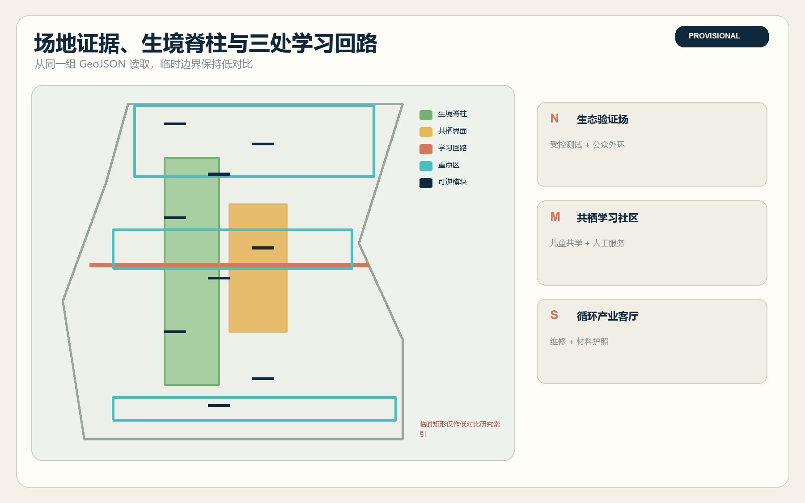
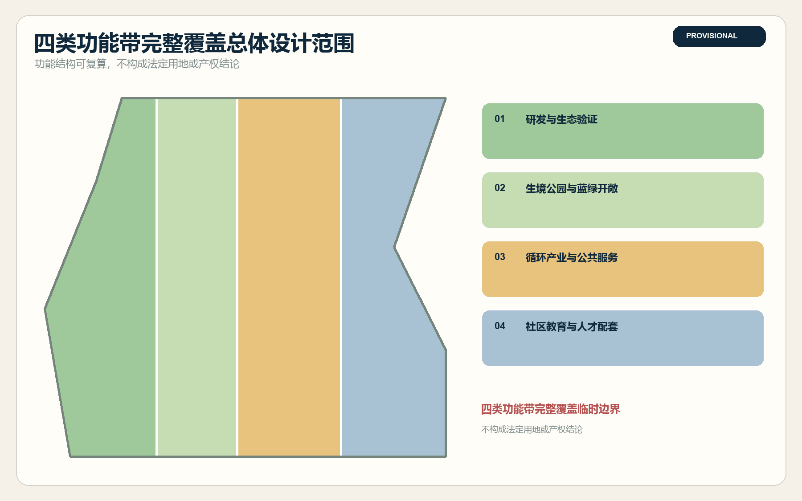
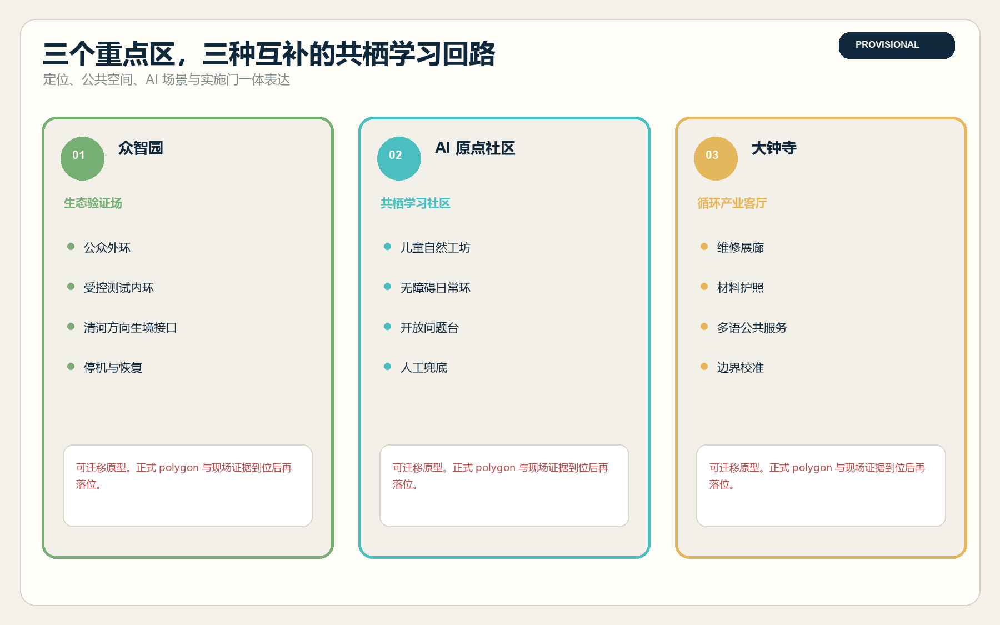
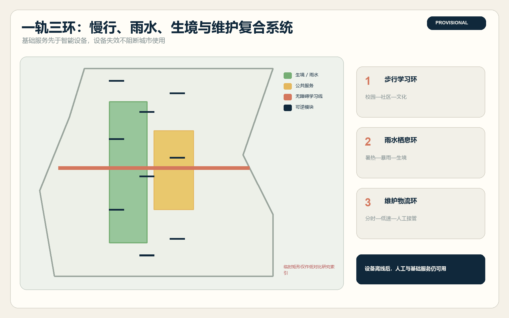
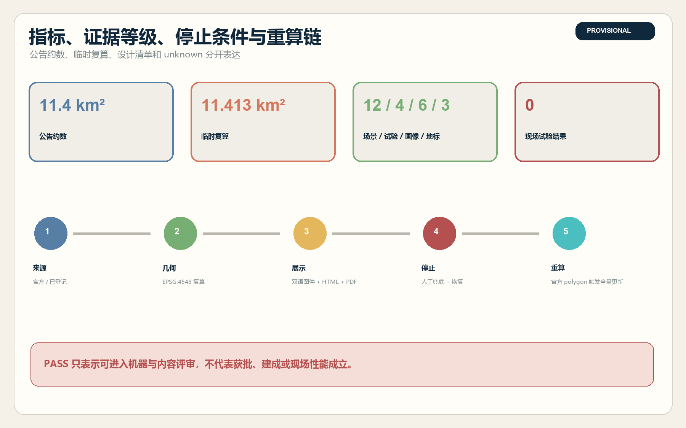

11.413 km²临时几何复算
12.34%概念生境图层比例
7.33%概念公共界面比例
12 / 4 / 6 / 3场景 / 试验 / 画像 / 地标
01 · 空间框架
一条生境脊柱 · 三个学习回路 · 九个可逆样方
已建遗址公园成为连续、无障碍的公共生境脊柱。技术是可拆卸的附加层，设备失效后，普通通行、休息和人工服务仍然可用。


02 · 重点区域
生态验证场 · 共栖学习社区 · 循环产业客厅

03 · 场景清单
12 个场景 · 4 个产业试验 · 6 类画像 · 3 座地标
01无障碍共栖导航
02暑热与暴雨安全路
03儿童共绘生境图
04可溯源铁路自然导览
05花园维护助手
06社区健康与安静路线
07低侵扰生态传感测试
08具身设备生境避让测试
09端侧算力能耗对照
10设备材料护照
11多语公共服务智能体
12生境公共预算工作坊

04 · 治理协议
人工兜底 · 物理停机 · 恢复 · 全量重算

来源
正式公告、Agent 任务书、仓库来源注册表、北京花园城市规划、儿童友好与生物多样性政策，以及六个国际创新区案例。完整出处、日期、权利和限制见 sources.json。
假设
官方 geometry、控规、权属、市政、生境基线和现场授权仍缺失。所有试验均为 not_run，所有点位均可迁移。